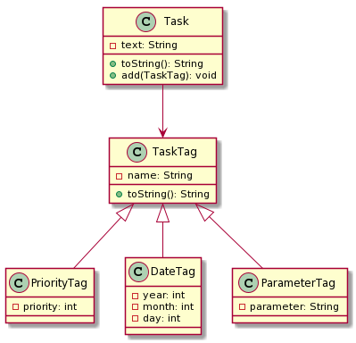

In the task, it is necessary to write the classes Task, TaskTag, PriorityTag, DateTag and ParameterTag.
In all classes, it is also necessary to implement the methods as shown in the class diagram. You are free to add and implement additional methods, attributes and constructors.

The Task class contains text and can contain 0 or more TaskTags. When the toString method is called, the text to which the TaskTags are connected (concatenated) is returned. Everything is separated by a single space. See the usage example for a specific example. A TaskTag can be added to a Task using the add method. Task can have a maximum of 10 TaskTags. If you try to add 11, nothing is added to Task.
Each type of tag (TaskTag) is displayed in a different way, i.e. the
record format is different. Examples of label records:
TaskTag, name="done" - record: @donePriorityTag, name="todo", priority=3 - record: @todo(3)ParameterTag, name="repeat", parameter="daily" - record: @repeat(daily)DateTag, name="due", year=2020, month=7, day=15- record: @due(2020-07-15) (the format is yyyy-mm-dd i.e. 4 digits for the year, 2 for the month and 2 for the day if the number can be displayed with fewer digits it is necessary to add zeros in front to the given number of digits).In the `DateTag' class, care should be taken that only correct values can be written. If a value is not correct, it is necessary to put the first closest correct value. E.g. for the month, if we get 15 in the constructor, then it should be set to 12, or for the day, if the input value is 0, it should be set to 1. For the day, pay attention to which month has how many days. Ignore leap years.
Usage example:
Task task = new Task("some task");
System.out.println(task);
task.add(new TaskTag("todo"));
System.out.println(task);
task.add(new PriorityTag("priority", 3));
System.out.println(task);
task.add(new ParameterTag("repeat", "weekly"));
System.out.println(task);
task.add(new DateTag("due", 2020, 5, 1));
System.out.println(task);
task.add(new DateTag("start", 2020, 4, 40));
System.out.println(task);
Expected output:
some task
some task @todo
some task @todo @priority(3)
some task @todo @priority(3) @repeat(weekly)
some task @todo @priority(3) @repeat(weekly) @due(2020-05-01)
some task @todo @priority(3) @repeat(weekly) @due(2020-05-01) @start(2020-04-30)
Visibility legend in the class diagram:
Note: All classes and interfaces must be public and located in the hr.fer.oop package.